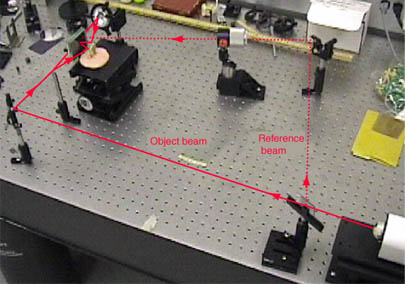

Making Transmission Holograms
The goals of this investigation are
Make a single reference beam transmission hologram
Work to optimize exposure and ratio for hologram production

Experimenters: Shannon Burnett, Julia Lintern, Franz Parkins, Amy Richards
Hologram setup for first hologram, Oct 11, 01.
Example of transmission hologram setup
Index
HyperPhysics
*****
Class Home
*****
Physics 3901
Go Back